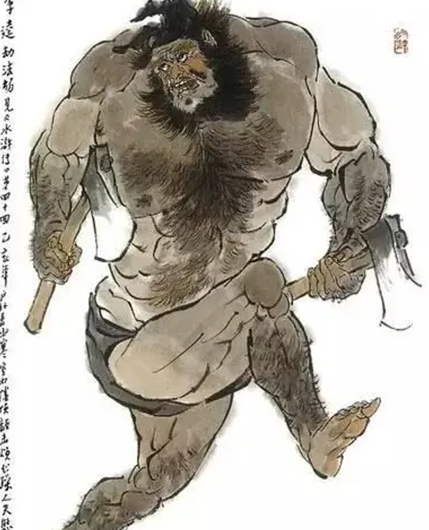

人物图片
人物评价
李逵在《水浒传》中被描绘为一个粗犷直率、忠诚勇敢的角色。他的形象 往往代表了反抗压迫、追求正义的精神。在故事中，李逵对兄弟们非常忠 诚，愿意为朋友和家人挺身而出，这种毅力和忠诚确实符合“英雄”的一些 特征。李逵是《水浒传》中最为鲜明的英雄形象之一。有忠诚、勇猛和直 率的性格，但也暴力和冲动。 李逵的人生经历中有几个重要的节点。首先，他在梁山的加入标志着他转 变为一名义军成员。其次，他与宋江的深厚友谊体现了他对兄弟的忠诚。 在“招文才”一章中，他为救宋江而不惜与敌人拼搏，显示了他对朋友的无 私和勇敢。 然而，李逵的暴力行为也使他陷入困境。在对待敌人时，他常常采取极端手段，甚至不惜杀人，这让他的人物形象更加复杂。 李逵的形象给我带来了深刻的启发。首先，他的忠诚和勇气让我明白，在面对不公时，勇于反抗是必要的，但同时也要考虑行动的后果，理智与情感的平衡尤为重要。其次，李逵的复杂性让我思考到，每个人物都有其多面性，英雄并非完美无瑕，反而是他们的缺陷使得他们更具人性。 李逵作为《水浒传》中的重要角色，其形象深刻地反映了人性的复杂和对正义的追求。他的经历和性格特点不仅为我们提供了丰富的文学享受，也引发了对道德和正义的深刻思考。在这个纷繁复杂的社会中，李逵的故事仍然激励着我们勇敢追求正义，同时也提醒我们保持理智与反思。